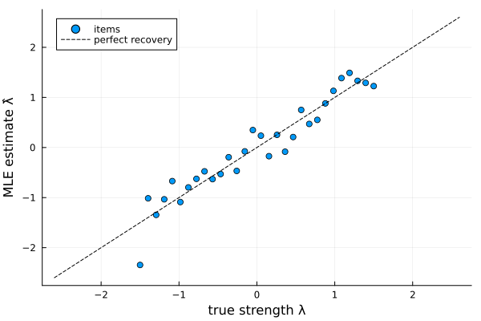
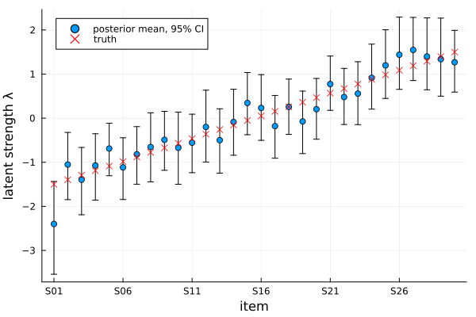
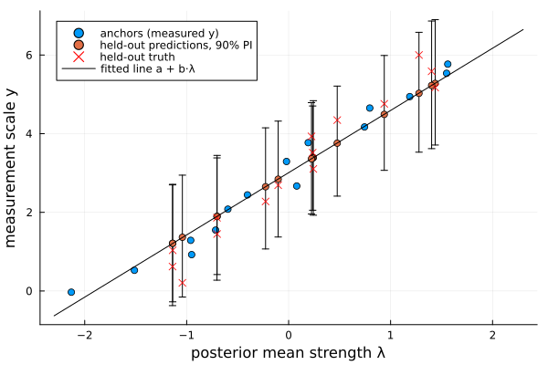

Bradley–Terry models
The Bradley–Terry model describes pairwise comparisons between items. Each item $i$ has a latent strength $\lambda_i$, and the probability that it wins a comparison against item $j$ is
\[P(i \text{ beats } j) = \frac{1}{1 + e^{-(\lambda_i - \lambda_j)}}.\]
ComparativeJudgement provides three ways to fit it:
- Maximum likelihood (
MLE) — fast point estimates of the strengths, good for ranking items. - Bayesian (
Bayesian) — a Pólya-Gamma augmented Gibbs sampler giving full posterior distributions, so you also get uncertainty for every strength and win probability. - Anchored (
BradleyTerryAnchored) — a joint Bayesian model in which known measurements $y = a + b\lambda + \varepsilon$ for a subset of items calibrate the latent scale, so the fit can predict measurements for the unanchored items.
This page walks through all three on one simulated dataset.
Simulating comparison data
We simulate 30 items with known, evenly spaced strengths and 600 comparisons in total, each between a randomly chosen pair of items. This is the typical comparative judgement regime: with 435 possible pairs, most pairs are compared only once or twice and some never meet at all:
using ComparativeJudgement
using Random
using Plots
rng = MersenneTwister(42)
labels = ["S" * lpad(i, 2, '0') for i in 1:30] # S01 … S30
n = length(labels)
λ_true = collect(range(-1.5, 1.5, length=n)) # S01 weakest … S30 strongest
logistic(x) = 1 / (1 + exp(-x))
n_comparisons = 600
wins = zeros(Int, n, n)
for _ in 1:n_comparisons
i = rand(rng, 1:n)
j = rand(rng, 1:n-1)
j = j >= i ? j + 1 : j # distinct random pair
if rand(rng) < logistic(λ_true[i] - λ_true[j])
wins[i, j] += 1
else
wins[j, i] += 1
end
end
data = PairwiseData(wins, labels)wins[i, j] counts how often item i beat item j; PairwiseData pairs the matrix with the item labels, which can be any type (strings, symbols, integers, …).
Maximum likelihood
fit takes the model, the inference method, and the data:
fitted_mle = fit(BradleyTerry(), MLE(), data)
fitted_mle.convergedtrue(fit(BradleyTerry(), data) is a shorthand for the same thing.) strengths returns the estimated $\hat\lambda$, centred to sum to zero — directly comparable to λ_true:
λ̂ = strengths(fitted_mle)
scatter(λ_true, λ̂;
xlabel="true strength λ", ylabel="MLE estimate λ̂",
label="items", legend=:topleft)
plot!(identity, -2.6:0.1:2.6; linestyle=:dash, color=:black, label="perfect recovery")
The estimates scatter around the diagonal with no systematic distortion — the spread is sampling noise from ~40 comparisons per item (the fit agrees with R's BradleyTerry2 to solver precision on this data).
Ranking the items is a sortperm away. With only 600 comparisons the recovered order is close to the truth (S30, S29, …, S01) but adjacent items — separated by just 0.10 on the latent scale — do swap:
labels[sortperm(λ̂, rev=true)]30-element Vector{String}:
"S27"
"S26"
"S28"
"S29"
"S30"
"S25"
"S24"
"S21"
"S23"
"S22"
⋮
"S08"
"S10"
"S05"
"S07"
"S02"
"S04"
"S06"
"S03"
"S01"probability gives fitted win probabilities, by label or by index, and loglikelihood the log-likelihood at the estimate:
(probability(fitted_mle, "S30", "S01"), loglikelihood(fitted_mle))(0.9726529881456617, -327.4487653376153)Bayesian inference
The Bayesian fit runs a Gibbs sampler (Pólya-Gamma augmentation makes every update conjugate) and returns posterior draws instead of a point estimate. Bayesian controls the run: n_samples, n_burnin, thin, and center (each sweep re-centres $\lambda$ to sum to zero, fixing the location that the likelihood leaves free). The prior on $\lambda$ is a NormalPrior, by default $N(0, 10 I)$:
method = Bayesian(n_samples=2000, n_burnin=500)
fitted_bayes = fit(BradleyTerry(), method, data, NormalPrior(n); rng=rng)Posterior summaries come from posterior_mean, posterior_std, and credible_interval. Plotting the posterior means with their 95% credible intervals against the truth makes the sparsity visible: roughly 40 comparisons per item leave each strength known only to within a few tenths, and nearly all intervals straddle the true values:
post = posterior_mean(fitted_bayes)
ci = [credible_interval(fitted_bayes, k; prob=0.95) for k in 1:n]
lo, hi = first.(ci), last.(ci)
scatter(1:n, post;
yerror=(post .- lo, hi .- post),
xlabel="item", ylabel="latent strength λ",
xticks=(1:5:n, labels[1:5:n]),
label="posterior mean, 95% CI", legend=:topleft)
scatter!(1:n, λ_true; marker=:x, color=:red, label="truth")
credible_interval(fitted_bayes, 1; prob=0.95) # 95% CI for item S01's strength(-3.5401185296883306, -1.4360535965546295)For Bayesian fits, probability returns the posterior mean win probability, which accounts for the uncertainty in the strengths:
(probability(fitted_bayes, "S30", "S01"), probability(fitted_bayes, "S16", "S15"))(0.9698713143934609, 0.4734353065382941)Anchored Bradley–Terry
Comparative judgement places items on a relative scale: the $\lambda$ above say item S30 is stronger than item S01, but not what either measures. If some items have known measurements — exam marks for a few benchmark scripts, lab measurements for a few samples — the anchored model ties the scales together. For the anchored subset $S$ it assumes
\[y_i = a + b\,\lambda_i + \varepsilon_i, \qquad \varepsilon_i \sim N(0, \sigma^2), \quad i \in S,\]
and fits everything jointly: the comparisons inform all the $\lambda$, the anchors pin down the calibration $(a, b, \sigma^2)$, and predictions for unanchored items land on the measurement scale.
We measure half the items (15 of the 30) and hold the other half out to test prediction. Anchoring every other item (S01, S03, …, S29) spreads the anchors across the strength range; the true calibration is $a = 3$, $b = 2$, $\sigma = 0.1$:
anchored_set = 1:2:n # S01, S03, …, S29
held_out = 2:2:n # S02, S04, …, S30
y_true = 3.0 .+ 2.0 .* λ_true # noiseless measurement scale
y_obs = y_true[anchored_set] .+ 0.1 .* randn(rng, length(anchored_set))
adata = AnchoredData(data, labels[anchored_set], y_obs)(A Dict works too: AnchoredData(data, Dict("S01" => y₁, "S03" => y₂, …)).) Fit with the same Bayesian method — the priors are bundled in an AnchoredPrior, whose defaults are weakly informative:
fitted_anchored = fit(BradleyTerryAnchored(), method, adata; rng=rng)calibration returns the posterior means of the calibration parameters. The intercept is recovered almost exactly. The slope is attenuated relative to the truth — a classic errors-in-variables effect: each $\lambda$ is located only to within ±0.4 by its ~40 comparisons, and regressing measurements on noisy predictors shrinks the slope. The noise variance $\sigma^2$ inflates to absorb that mismatch, which keeps the predictive intervals honest:
calibration(fitted_anchored)(a = 3.0083618905434184, b = 1.5822750034628053, σ² = 0.3775609321799992)Predicting the held-out half
predict with no item argument returns the posterior-predictive mean measurement for every item. Compare the fifteen never-measured items against their true values:
preds = predict(fitted_anchored)
[labels[held_out] round.(preds[held_out], digits=2) round.(y_true[held_out], digits=2)]15×3 Matrix{Any}:
"S02" 1.37 0.21
"S04" 1.21 0.62
"S06" 1.21 1.03
"S08" 1.9 1.45
"S10" 1.89 1.86
"S12" 2.65 2.28
"S14" 2.84 2.69
"S16" 3.39 3.1
"S18" 3.38 3.52
"S20" 3.36 3.93
"S22" 3.76 4.34
"S24" 4.49 4.76
"S26" 5.28 5.17
"S28" 5.23 5.59
"S30" 5.03 6.0rmse = sqrt(sum((preds[held_out] .- y_true[held_out]).^2) / length(held_out))
round(rmse, digits=3)0.518An RMSE of about 0.5 on a measurement scale spanning 0–6, driven entirely by each item's comparison record — none of these items was measured. The errors are not uniform: mid-scale items are predicted closely, while the held-out items at the ends of the scale (S02, S30) are pulled toward the centre, the prediction-scale footprint of the slope attenuation above. More comparisons per item would tighten both.
The whole joint model fits on one picture: the calibration line maps latent strengths to the measurement scale, the anchors pin it down, and the held-out items ride along it with predictive intervals that comfortably cover their true values:
cal = calibration(fitted_anchored)
λ_post = posterior_mean(fitted_anchored)
pred_ints = [predict(fitted_anchored, k; prob=0.9, rng=rng) for k in held_out]
plo, phi = first.(pred_ints), last.(pred_ints)
scatter(λ_post[anchored_set], y_obs;
xlabel="posterior mean strength λ", ylabel="measurement scale y",
label="anchors (measured y)", legend=:topleft)
scatter!(λ_post[held_out], preds[held_out];
yerror=(preds[held_out] .- plo, phi .- preds[held_out]),
label="held-out predictions, 90% PI")
scatter!(λ_post[held_out], y_true[held_out]; marker=:x, color=:red,
label="held-out truth")
plot!(x -> cal.a + cal.b * x, -2.3, 2.3; color=:black, label="fitted line a + b·λ")
For a single item, predict returns posterior-predictive draws, or a credible interval when prob is given:
predict(fitted_anchored, "S30"; prob=0.9, rng=rng) # item S30 was never measured(3.5981333610817394, 6.570282240381224)The intervals are honest about the comparison sparsity — wide enough to cover even the shrunk extremes. Check how many of the fifteen held-out true values fall inside their 90% predictive interval:
covered = count(held_out) do k
lo, hi = predict(fitted_anchored, k; prob=0.9, rng=rng)
lo <= y_true[k] <= hi
end
(covered, length(held_out))(15, 15)The latent-scale accessors work exactly as in the plain Bayesian fit:
(posterior_mean(fitted_anchored)[end], probability(fitted_anchored, "S30", "S01"))(1.2782905490712384, 0.963653359101749)The anchor likelihood only constrains the combination $a + b\lambda$: shifting every $\lambda$ by a constant while adjusting the intercept $a$ leaves the model unchanged. The sampler therefore keeps center=true (sum-to-zero $\lambda$) for anchored fits too, and the intercept absorbs the location. Predictions are unaffected either way; centering just makes $\lambda$ and $(a, b)$ individually well-identified.